06 / Oceans · 2023 · Sleaszy Rider Records
Cemetery of Scream Oceans
The sixth studio album. Thirteen tracks where doom weight meets gothic melody, ambience and oriental motifs.
A return fourteen years after Frozen Images. Music that does not try to recreate the past — it tries to transform it.
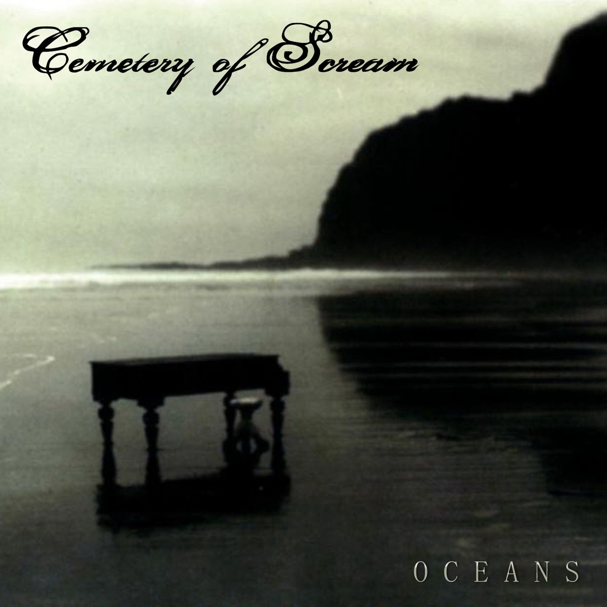
LP 06 / 202301Band
A history written
in low frequencies.
Since 1992, Cemetery of Scream have fused the weight of doom metal with gothic melancholy, keyboard-built space and a need to tell stories through sound.
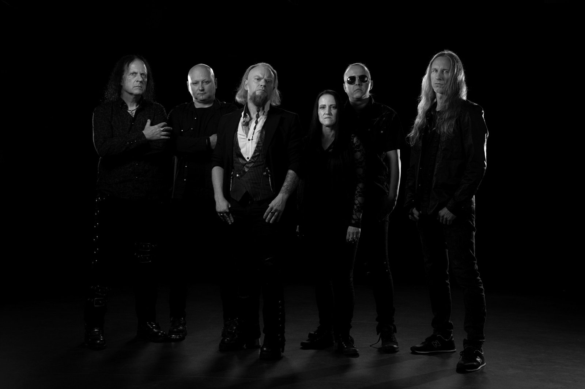
Melancholy is not a mood here. It is a method.
- Formed
- 1992, Kraków
- Sound
- Doom / gothic metal
- Releases
- 6 albums · 1 EP · 1 demo
- Latest
- Oceans (2023)
- Label
- Sleaszy Rider Records
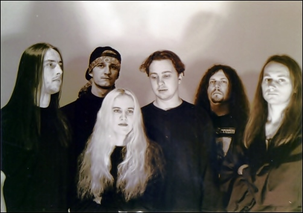
1992—1995 / First recordings
From Kraków, against the current.
Cemetery of Scream began in 1992, when Marcin Piwowarczyk (guitar) and Grzegorz Książek (drums) started writing material that was meant to sound different from the thrash and death metal of their previous bands. In April 1993 they recorded the demo Sameone at Kraków's Gamma Studio. The session was aided by Jacek Królik (bass) and Marcin Kotaś (vocals), who soon became permanent members. The tape was received warmly by the Polish underground press and fans. One reviewer wrote of “nostalgia, melody, gloom and simplicity pushed to perfection”.
In autumn 1993, guitarist Artur Oleszkiewicz and keyboardist Kasia Rachwalik joined. In late July 1994, right after playing the Strash’ydło 94 festival, the band returned to Gamma Studio to record their debut album Melancholy. The sessions featured Piotr Łabuzek (keyboards, co-production), Magda Jaglarz and Paulina Piwowarczyk (vocals) and Paweł Góralczyk (guitar solos). Marcin Kotaś's lyrics, the music and the artwork were conceived as one whole. The album was released in 1995 on Croon Records.
1995—2000 / Deeppression
A weight that remains.
The video for “Anxiety” appeared on the Nuclear Blast compilation Beauty in Darkness alongside Lacrimosa, Tiamat, Love Like Blood and Therion. Melancholy was named album of the month in the Dutch Aardschok and received favourable reviews in the German Metal Hammer and Ablaze.
In June 1997 the band recorded Deeppression. Artur Oleszkiewicz was replaced by Paweł Góralczyk of Hellias. The album was released by Croon Records in Poland and Serenades Records in Europe; Germany's Rock Hard wrote: “Cemetery of Scream from Poland, alongside Vader, is the highest quality goods.” In 1999 the Fin de siècle EP arrived — a preview of the next album, inspired by the wars at the end of the century in the Balkans and Chechnya. It included a cover of Porcupine Tree's “Radioactive Toy”. Prelude to a Sentimental Journey was released on 20 October 2000 by Mystic Production.
“Cemetery of Scream from Poland, alongside Vader, is the highest quality goods.”
Rock Hard, 1997
2005—2009 / New voices
Frozen images.
In 2005 Marcin Kotaś left the band and was replaced on vocals by Sebastian Góralik. After the Dark Stars Festival tour (with Closterkeller, Darzamat and Moonlight), The Event Horizon was released in 2006 on Metal Mind Productions — the fourth studio album and the first in six years. That same year Tomasz Rutkowski took over the drums. In 2008 Olaf Różański became the new vocalist.
Frozen Images was released on 26 January 2009; it was promoted with videos for “Cat's Grin” and “Prince of the City Lights”. Metal Mind reissued all previous releases, including Sameone on CD in Europe for the first time. The following years were mostly spent on foreign stages, including Moldova, Ukraine and Poland; the band shared bills with Kreator, Amorphis, Moonspell, Therion and Candlemass.
2012—2023 / Oceans
A return after fourteen years.
In 2012 the band began recording Oceans; that same year Grzegorz Królik replaced his brother Jacek on bass. In the meantime the members contributed to tribute albums for Lake of Tears (2014), Paradise Lost (2016) and My Dying Bride (2017), and a video for “Evil Inside” was directed by Marcin Halerz.
Oceans was released on 3 November 2023 by Sleaszy Rider Records — fourteen years after Frozen Images. Its thirteen tracks combine doom weight with gothic melody, ambience and oriental motifs. It is the band's sixth studio album.
Line-up
The musicians who recorded Oceans. The live line-up may vary by event.
- Olaf Różańskivocals
- Marcin Piwowarczykguitar
- Paweł Góralczykguitar
- Katarzyna Rutkowskakeyboards
- Grzegorz Królikbass
- Tomasz Rutkowskidrums
02Discography
Eight releases.
One melancholy.
From the Sameone tape in 1993 to Oceans in 2023. Choose a release from the list to see its cover and full tracklist.
Catalogue / 8 releases
Sameone
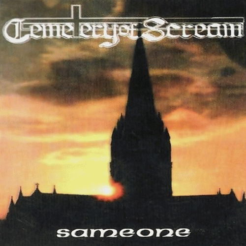
Demo · 1993 · Gamma Studio
- Intro (Ebony Tears)02:22
- The Shadow of Notre Dame Cathedral03:46
- Sleeping in the Mystical World02:04
- Procession of the Time06:18
- Apocalyptic Visions00:48
- Unfathomable Truth05:52
- Cry of Soul03:06
- In the Eternal Sin05:18
- Outro (Requiem)01:53
The debut cassette, recorded in April 1993 at Gamma Studio in Kraków. Over 31 minutes of mystical symphonic doom death metal with extensive keyboards. The demo was issued on CD by Metal Mind Productions in 2003.
Some catalogues spell the fifth track “Apocaliptic Visions”.
Melancholy
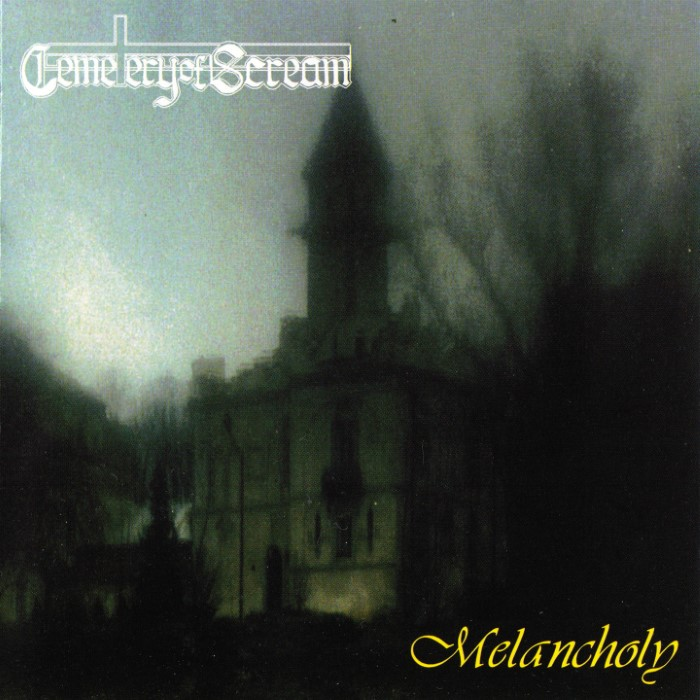
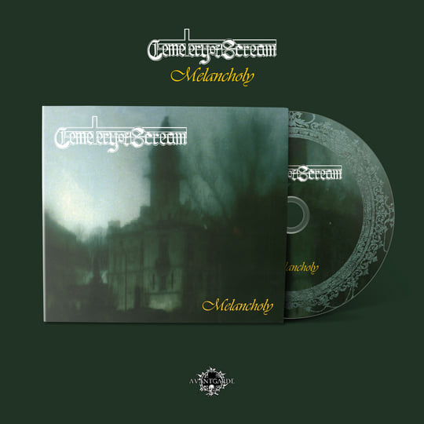
Studio album · 1995 · Croon Records
- Prologue02:54
- Melancholy06:08
- Interlude02:36
- Dolor Ante Lucem04:43
- Interlude II03:10
- Gods of Steel06:01
- And just the birds..02:46
- Apocalyptic Visions (II)05:26
- Anxiety07:54
- Interlude III02:38
- Landscape of Sadness04:36
- Lost Flowers04:43
- Interlude IV01:26
- Violet Fields of Extinction05:32
- Interlude V00:44
- Epilogue02:58
- The Shadow of Notre Dame Cathedral05:35
- Melancholy (Orchestral version)04:44
The debut LP. Doom weight, keyboards and melancholy as a compositional method. In 2021 Avantgarde Music released an expanded 18-track remaster that restored the interludes and added two recordings. The full tracklist of that edition is below.
The original 1995 edition and the 2003 remaster contain 12 tracks. The expanded 2021 reissue is available on CD and, for the first time, on vinyl.
Deeppression
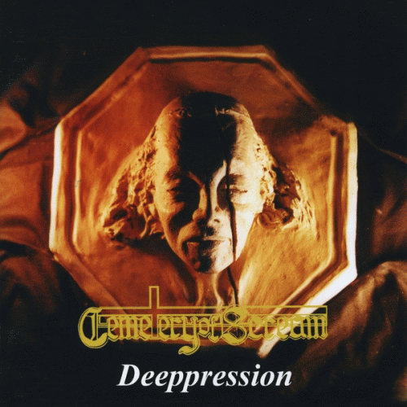
Studio album · 1997 (PL) / 1998 (EU)
- Whisper / Touch07:40
- Breeze07:40
- Episode Man04:39
- Ironic05:09
- Walkin' on Air04:57
- Reveal the Rainbow05:51
- Cruel06:39
- Float to Escape05:30
A heavier, denser album recorded in June and July 1997 at Gamma Studio. Polish edition on Croon Records, European edition on Serenades Records; reissued by Metal Mind in 2003.
Germany's Rock Hard wrote: “Cemetery of Scream from Poland, alongside Vader, is the highest quality goods.”
Fin de siècle
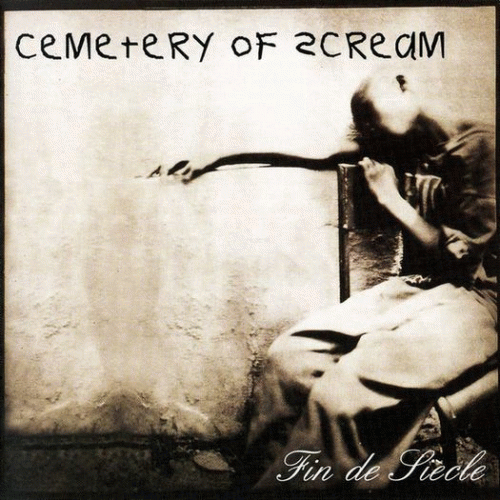
EP · 1999 · self-released
- Colder Than Ever06:18
- Descent03:11
- Insincere05:54
- Introduction: Dimension Zero00:48
- Radioactive Toy (Porcupine Tree cover)05:48
- Apocalyptic Visions (Part III)04:24
A six-track EP inspired by the wars at the end of the century in the Balkans and Chechnya. It includes a cover of Porcupine Tree's “Radioactive Toy”. The CD was reissued by Metal Mind Productions in 2003.
Prelude to a Sentimental Journey
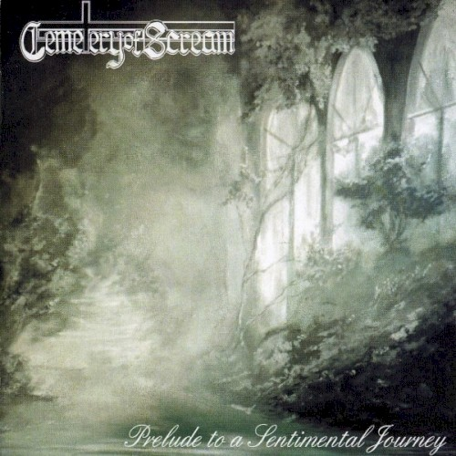
Studio album · 20 October 2000 · Mystic Production
- Time Is Shadow02:03
- Haila05:37
- In the Cemetery Garden02:00
- The Ray of Cry05:19
- Overcall04:08
- The Chess at the Foot of the Mountain01:17
- Cult05:55
- A Game of Chess05:10
- Colder than Ever04:30
- The Hourglass04:35
- Towards to the Final Consciousness01:40
- Bridge to a Desert04:31
- Fall05:40
- When the Sun's Born Red03:17
- Radioactive Toy (Porcupine Tree cover)05:49
Recorded in spring 2000 at Gamma Studio and released on 20 October 2000 by Mystic Production. Fifteen tracks; “Radioactive Toy” is a bonus dependent on the edition.
Some editions contain 14 tracks — without “Radioactive Toy”.
The Event Horizon
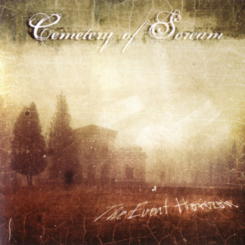
Studio album · 2006 · Metal Mind Productions
- Prophet06:11
- Ganges06:20
- Komatrance03:44
- On the Border03:49
- Cold Obsession in My Eyes06:39
- Absinthe04:16
- The Secret Window03:50
- Burial Ground05:10
- In His Room03:59
- Where Next?01:16
The fourth studio album and the first in six years. Recorded after the Dark Stars Festival tour; Tomasz Rutkowski plays drums.
Frozen Images
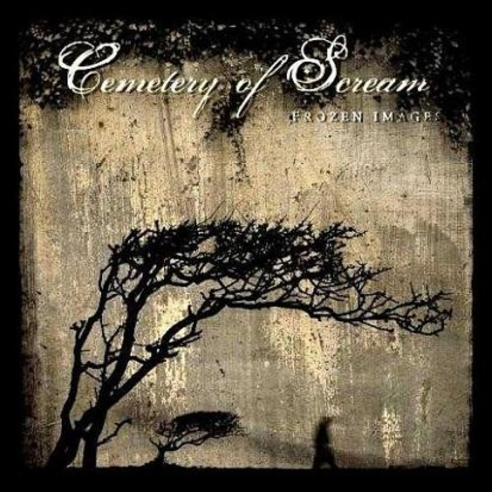
Studio album · 26 January 2009 · Metal Mind Productions
- Bluebird05:53
- Prince of the City's Lights06:03
- Cat's Grin04:18
- The Bridge of Ashes06:36
- In Your Blood05:51
- Golden Lullaby05:46
- Ritual Fire Dance04:29
- Black Flowers04:46
- A Million as One (As a Million)04:48
- Geisha Out of Dreams05:29
- Sapphire Sun06:41
- Nights in White Satin (The Moody Blues cover)04:22
The first album with Olaf Różański on vocals. Twelve tracks, including a cover of The Moody Blues' “Nights in White Satin”. Promoted with videos for “Cat's Grin” and “Prince of the City Lights”.
Oceans
Studio album · 3 November 2023 · Sleaszy Rider Records
- Oceans02:15
- In the Blue06:45
- Along the Coast03:03
- Sunken Bells on Num-Yabisc05:59
- Aquarius06:55
- House of the Fading Sun06:43
- Time to Let You Go06:28
- It's Full of Stars05:34
- Opening of the Mouth05:50
- September Folk06:16
- I Shine05:27
- Final Experience06:18
- Everything Rhymes Goodnight02:20
The sixth studio album and a return after fourteen years. Thirteen tracks where doom weight meets gothic melody, ambience and oriental motifs. Digipak with a 16-page booklet.
Some catalogues shorten the eighth track to “Full of Stars”; the label's official tracklist reads “It's Full of Stars”.
Dates and tracklists may differ by edition, format and territory. Full release documentation is held in the project archive.
03Gallery
Light, smoke,
silence.
Frames from clubs and festivals. A selection from the band archive — from black-and-white photographs of the 1990s to recent shows.

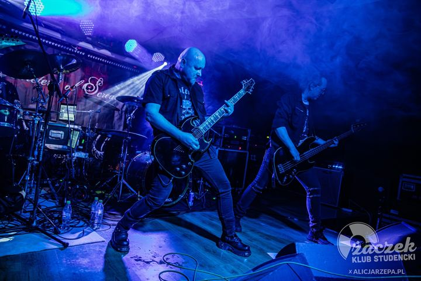
01Live
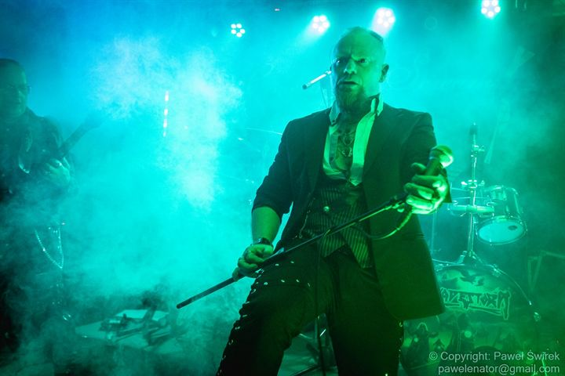
02Live
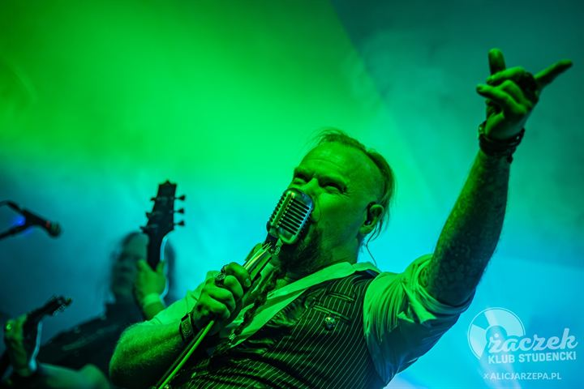
03Live


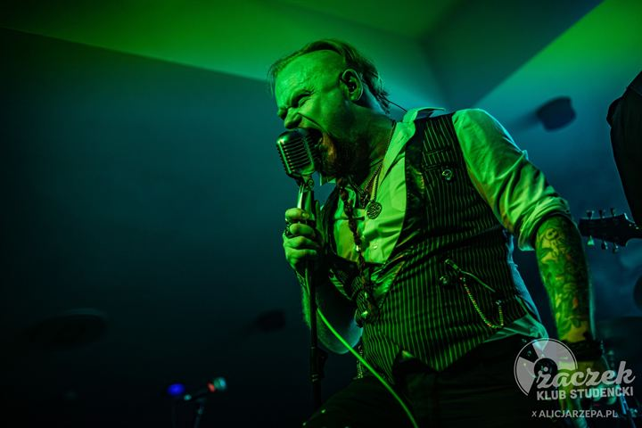
07Live


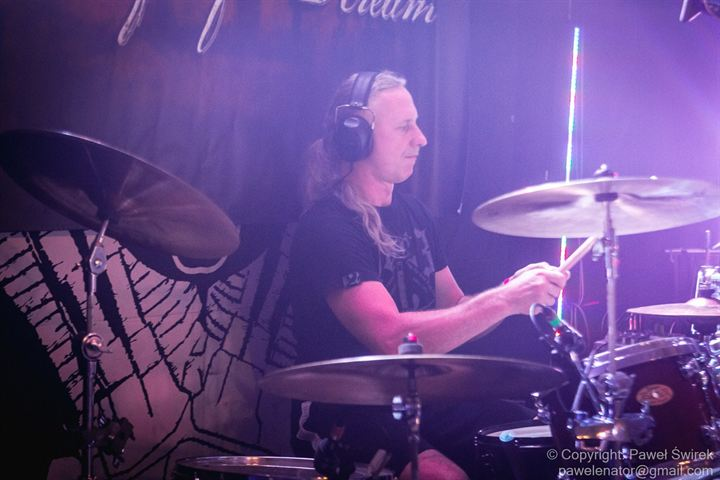
10Live
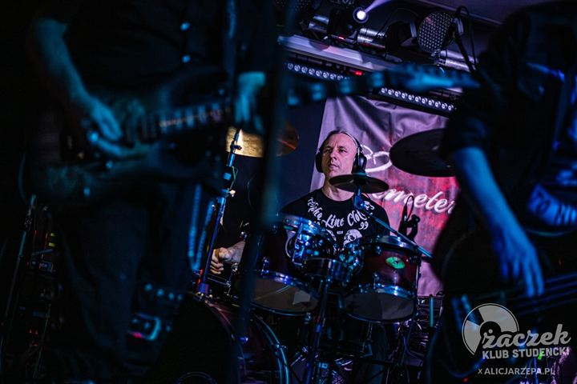
11Live
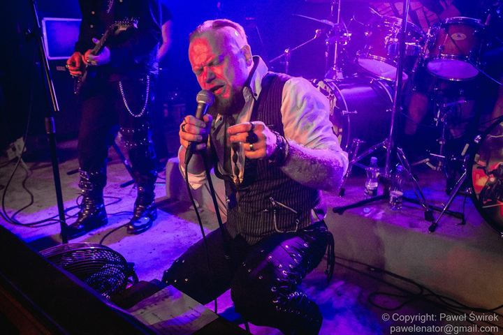
12Live
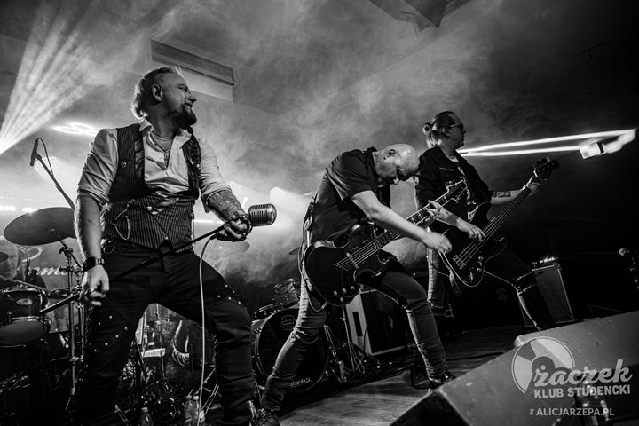
13Live
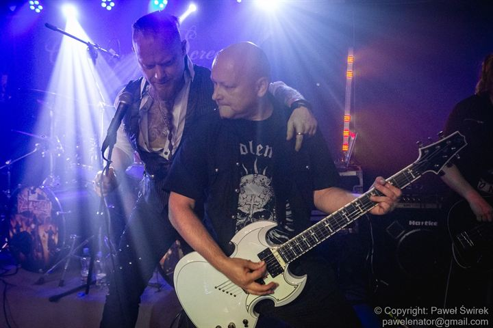
14Live
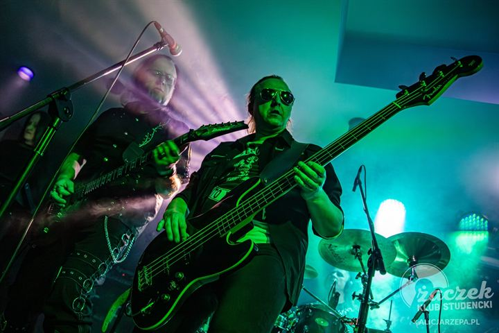
15Live
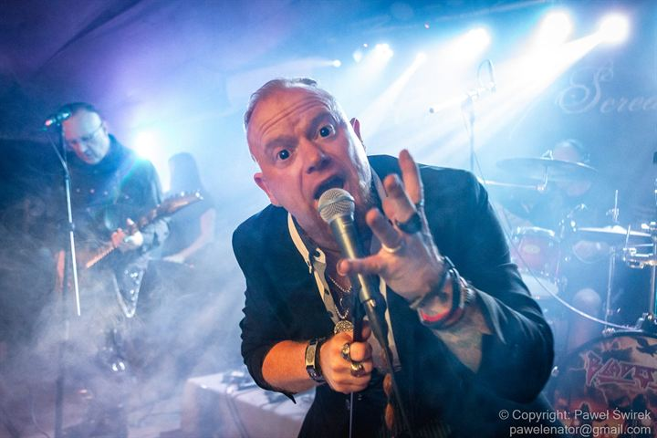
16Live
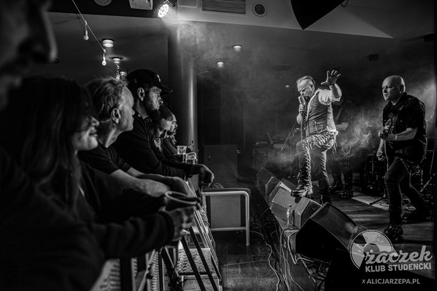
17Live
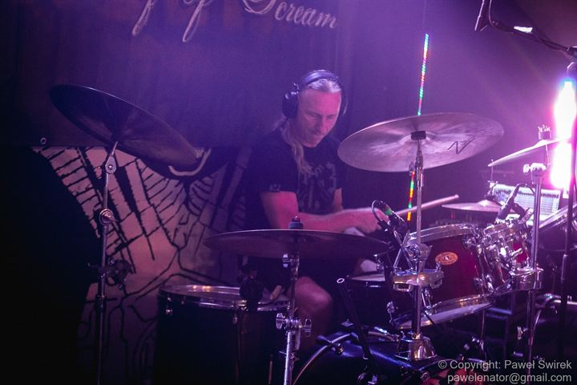
18Live
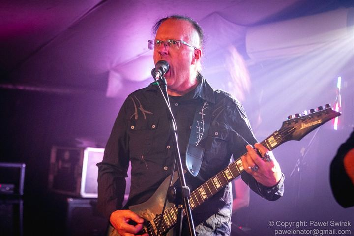
19Live

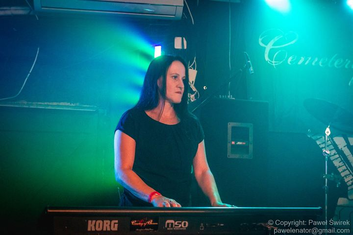
21Live
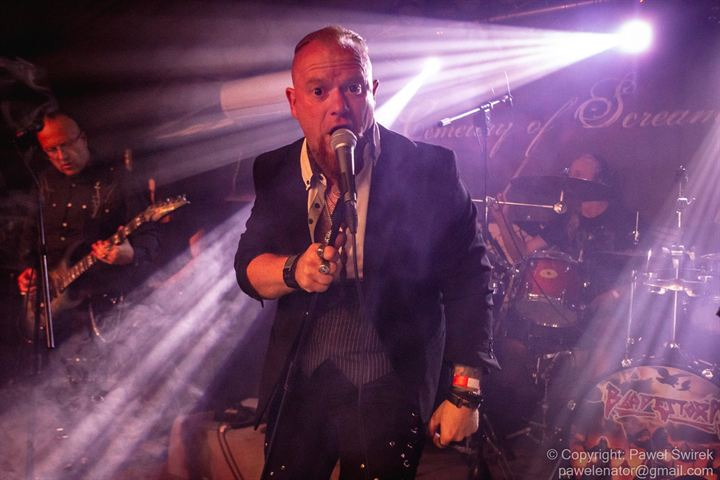
22Live
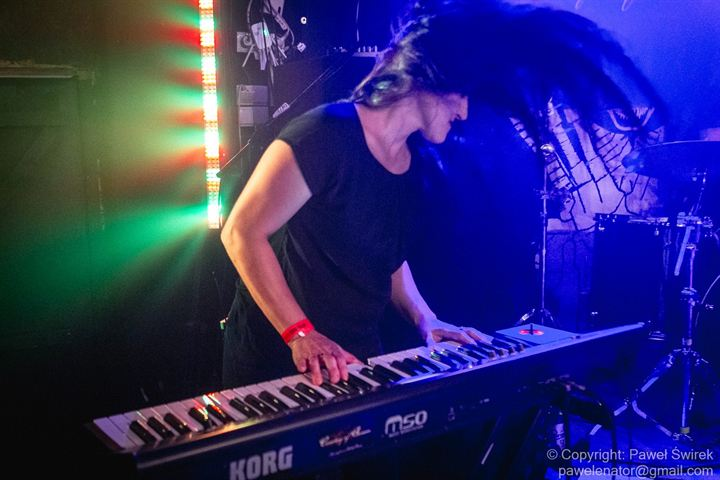
23Live
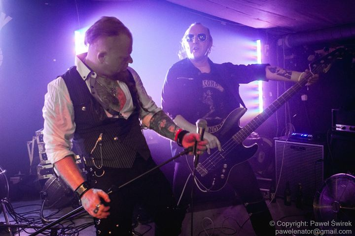
24LiveDrag or use the arrows
01 / 24
Archive / selection
1997—2023


Photographs: Paweł Świrek, Zaczek, band archive. Click a frame to enlarge.
04Live
New cities.
The same weight.
Cemetery of Scream return to the stage when the right place and the right reason appear. If you are organising a concert, festival or special event — get in touch.
Status / 2026
No confirmed
dates.
We are working on new shows. If you would like to invite Cemetery of Scream to your club or festival, send the city, date and nature of the event — we will reply with a concrete answer.
Recent shows
Selected stages
- Kreator festival
- Amorphis festival
- Moonspell festival
- Therion support
- Candlemass support
- Dark Stars Festival tour
Over the years the band has shared stages with Kreator, Amorphis, Moonspell, Therion and Candlemass. They were the first Polish band to play in Chișinău.
Booking and invitations: Bandsintown or a Facebook message. Release and press enquiries: Sleaszy Rider Records.
05Press & Contact
Materials that
speak for themselves.
A short bio, photographs and logo for promoters, journalists and festivals. No unnecessary files, no corporate speak.
Press kit / 2026
Bio, photos,
logo.
A package for promoters and media: short bio PL/EN, high-resolution photographs, PNG/SVG/CDR logos, the Oceans cover and a technical rider template.
ZIP 2.5 MB · bio PL/EN, photos, SVG/CDR logo, rider (template)
Booking enquiries via Bandsintown or Facebook. Press materials are available above. For urgent matters, message the band on Facebook.